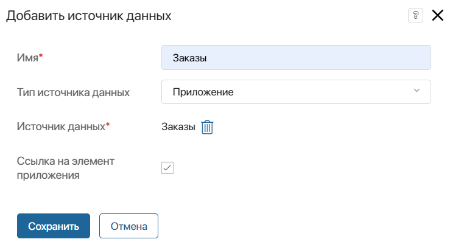
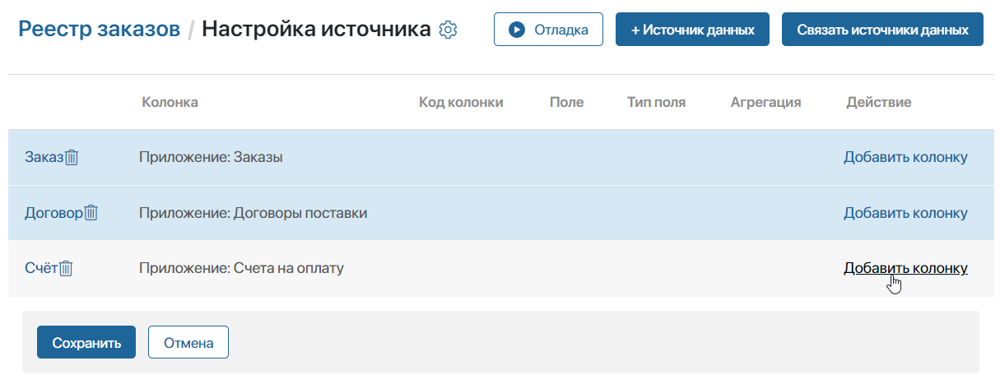
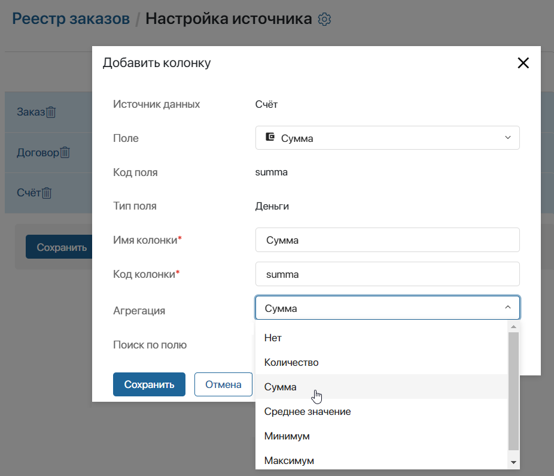
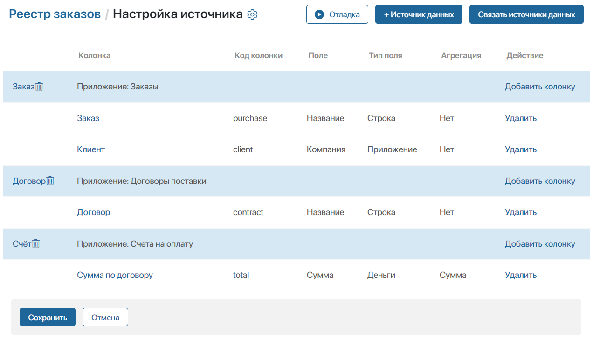
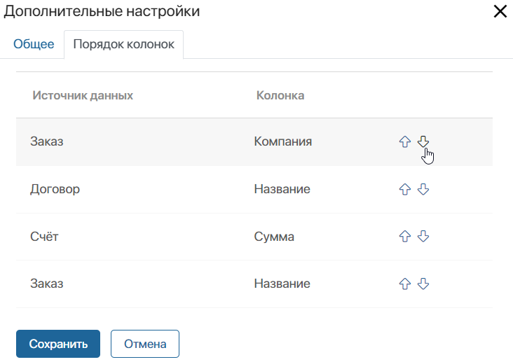

Источник — это компонент системы, данные из которого будут отображаться на странице отчёта в виде таблицы. В отчёт можно добавить несколько компонентов и связать их между собой. В качестве источников могут выступать:
- системные и пользовательские приложения типа Стандартное, Событие, Документ из любых разделов;
- системные и пользовательские бизнес-процессы системы.
Использование контракта как источника для отчёта недоступно. Указать один отчёт источником для другого также нельзя.
Чтобы в отчёте аккумулировались данные из нескольких источников, компоненты связываются между собой попарно. Доступна настройка связи между источниками по типам:
- приложение – приложение;
- бизнес-процесс – приложение;
- бизнес-процесс – бизнес-процесс.
Объединение данных двух компонентов в отчёте выполняется с помощью полей для связи, которые выбираются из контекста источников.
Перед добавлением источников в отчёт определите, по каким полям они будут связываться между собой. Создайте эти поля в контексте источников и включите для них опцию поиска и сортировки.
С доступными способами объединения источников и типами полей для связи можно ознакомиться в статье «Настройка связи между источниками и отладка отчёта».
Выбрать источники данных
- Откройте отчёт и в центре страницы нажмите кнопку Добавить источник.
- В правом верхнем углу открывшейся страницы нажмите + Источник данных.
- Укажите название источника и выберите приложение из любого раздела системы.

- Имя* — укажите название источника, которое будет отображаться на странице настроек отчёта;
- Тип источника данных — добавьте компонент системы, контекст которого необходимо отобразить в отчёте: приложение или бизнес-процесс;
- Источник данных* — выберите любое приложение или процесс в системе;
- Ссылка на элемент приложения — опция доступна для источника типа Приложение. Когда опция включена, в таблицу отчёта можно добавить поле Название из контекста приложения, и оно будет отображаться в виде ссылки на элемент. Нажав на ссылку, пользователи смогут перейти в карточку элемента, добавленного в отчёт.
- Нажмите Сохранить.
- Таким образом добавьте все источники, данные из которых необходимо отображать в таблице отчёта.
Добавить в отчёт можно более двух компонентов системы. Чтобы корректно настроить отчёт, для каждого источника создаётся хотя бы одна связь с другим источником.
После того как вы указали все источники, настройте колонки таблицы отчёта.
Добавить колонки таблицы
Каждая колонка таблицы в отчёте — это добавленное свойство из контекста указанного источника.
В колонке можно отображать значение свойства или задать агрегацию данных по этому свойству из нескольких элементов. Например, если в договоре указано несколько счетов, отобразить можно сумму по всем записям.
Добавленные в виде колонок свойства, для которых включена опция поиска и сортировки, используются в качестве фильтров для поиска на готовой странице отчёта.
Чтобы добавить данные в таблицу, выполните следующие действия:
- Напротив названия источника нажмите Добавить колонку.

- Заполните поля в открывшемся окне:

- Источник данных — в поле отображается название выбранного источника;
- Поле — из контекста приложения или процесса, указанного в качестве источника;
- Код поля, Тип поля — значения заполняются автоматически в соответствии с выбранным полем из контекста источника;
- Имя колонки* — укажите, как будет называться отображаемая в таблице колонка;
- Код колонки* — код необходим для экспорта данных из колонки и используется при составлении шаблона для выгрузки таблицы. Поле заполняется автоматически по указанному имени колонки. Значение можно изменить вручную, чтобы код каждой добавленной в отчёт колонки был уникальным;
- Агрегация — опция позволяет применять функции агрегации к данным из источника для создания сводных таблиц или статистики. Выбрать можно: суммирование, подсчёт количества, отображение среднего значения, максимума или минимума. В колонке таблицы будет отображаться не указанное в поле значение, а результат группировки записей из нескольких элементов или экземпляров, соответствующий заданному условию. Например, вы можете агрегировать данные о заказах для каждого месяца или подсчитать общую сумму продаж за определённый период. При выборе Нет в таблице будет отображаться значение, указанное в карточке элемента источника;
- Поиск по полю — отмеченная опция показывает, что свойство будет использоваться в качестве фильтра для поиска данных на странице отчёта. Включается автоматически, если для поля в контексте источника активирована опция поиска и сортировки или для колонки в отчёте задана агрегация данных.
- Сохраните добавленную колонку.
- Настройте аналогичным образом колонки таблицы, выбрав свойства для отображения из добавленных источников.
- Вы можете отредактировать название колонки в таблице и изменить настройки агрегации. Для этого нажмите на добавленное свойство в списке.
- Чтобы убрать колонку из таблицы, напротив свойства нажмите Удалить. Если при этом отобразилась ошибка о нарушении связей между источниками, можно добавить свойство повторно и указать заданный ранее код удалённой колонки.
В примере в отчёт добавлены приложения-источники Заказы, Договоры, Счета. В таблице показываются поля с названием заказа, компанией-заказчиком, названием договора и суммой счетов по нему. Настройки на странице выглядят следующим образом:

Настроить таблицу
Вы можете установить порядок отображения колонок в таблице, а также периодичность обновления данных в ней. Для этого откройте дополнительные настройки таблицы:
- Нажмите на значок шестерёнки в левом верхнем углу страницы Настройка источника.
- В открывшемся окне укажите настройки на двух доступных вкладках:
- Общее — в поле Периодичность обновления данных в минутах укажите время, после которого внесённые в источники изменения будут отображаться в отчёте. По умолчанию указано 5 минут. Это значит, что новые элементы приложения или экземпляры процессов отобразятся в отчёте спустя 5 минут после их создания.
Минимальное значение — 1 минута. Чтобы таблица обновлялась без задержек, обратитесь в техподдержку ELMA365 для установки в поле значения 0. Обратите внимание, данная опция приведёт к дополнительной нагрузке на систему.
- Порядок колонок — настройте порядок отображения колонок в таблице отчёта. Для этого напротив названия колонки нажмите на значок стрелки вверх или вниз.

- Сохраните дополнительные настройки таблицы.
После добавления источников и их свойств для отображения в отчёте необходимо связать источники между собой, т. е. объединить разные компоненты, например, элементы нескольких приложений, в одну таблицу с данными. Если не установить связь, при сохранении списка источников вы увидите оповещение об ошибке.